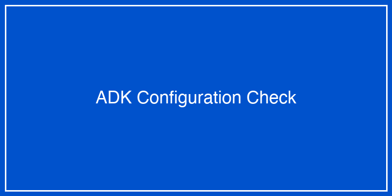
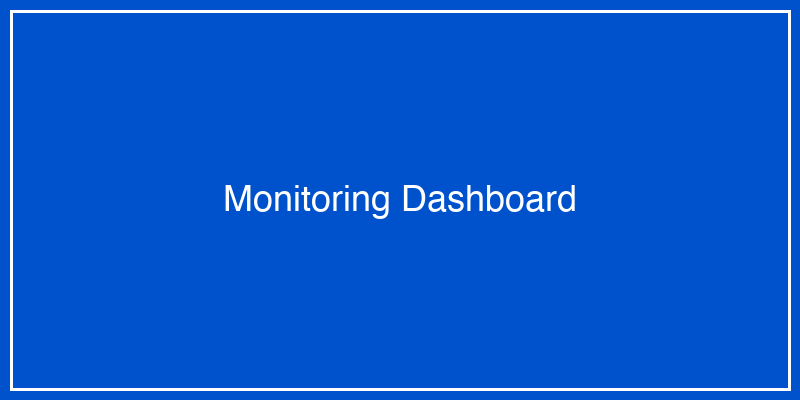

ADKからWatsonx.orchestrateへのデプロイ¶
このセクションでは、ADK（AI Development Kit）で開発したAIエージェントをWatsonx.orchestrate（WXO）にデプロイし、実際に動かす手順を画像付きで解説します。
前提条件
- ADKで動作確認済みのエージェントがある
- Watsonx.orchestrateへのアクセス権限がある
- 基本的なエージェント開発の知識がある
デプロイの全体像¶
graph LR
A[ADK開発環境] --> B[エージェントのエクスポート]
B --> C[WXOへのアップロード]
C --> D[設定と検証]
D --> E[本番稼働]
ステップ1: ADKでのエージェント準備¶
1.1 エージェントの最終確認¶
まず、ADKでエージェントが正しく動作することを確認します。
# agent_test.py
from adk import Agent, Tool
import json
# エージェントのテスト実行
def test_agent():
# エージェントの読み込み
agent = Agent.load("customer_support_agent")
# テストクエリの実行
response = agent.query("顧客ID: 12345の注文履歴を教えてください")
print(f"応答: {response}")
assert response is not None
if __name__ == "__main__":
test_agent()
1.2 設定ファイルの確認¶
agent_config.yamlが正しく設定されているか確認します：
# agent_config.yaml
agent:
name: customer_support_agent
version: 1.0.0
description: 顧客サポート用AIエージェント
tools:
- name: customer_database_search
description: 顧客データベースを検索
endpoint: /api/v1/customer/search
- name: order_history_lookup
description: 注文履歴を取得
endpoint: /api/v1/orders/history
model:
provider: watsonx
name: granite-13b-chat-v2
parameters:
temperature: 0.7
max_tokens: 2048
deployment:
environment: production
region: us-south
scaling:
min_instances: 1
max_instances: 5
 図1: ADK設定確認画面
ステップ2: エージェントのエクスポート¶
2.1 エクスポートコマンドの実行¶
ADKのCLIを使用してエージェントをエクスポートします：
# エージェントのビルド
adk build customer_support_agent
# エクスポート（WXO形式）
adk export customer_support_agent --format wxo --output ./export/
2.2 エクスポートファイルの確認¶
エクスポートされたファイル構造：
export/
├── customer_support_agent.wxo
├── manifest.json
├── tools/
│ ├── customer_database_search.py
│ └── order_history_lookup.py
├── prompts/
│ └── system_prompt.txt
└── tests/
└── integration_tests.json
図2: エクスポート完了画面
ステップ3: Watsonx.orchestrateへのアップロード¶
3.1 WXOコンソールへのログイン¶
- ブラウザでWatsonx.orchestrateにアクセス
- IBMidでログイン
- 「エージェント管理」セクションに移動
図3: WXOログイン画面
3.2 新規エージェントの作成¶
- 「新規エージェント」ボタンをクリック
- 「インポート」オプションを選択
- エクスポートしたファイルをアップロード
 図4: エージェントインポート画面
図4: エージェントインポート画面
3.3 エージェント情報の設定¶
# WXO上での設定項目
エージェント名: 顧客サポートエージェント
説明: お客様の問い合わせに対応するAIエージェント
カテゴリ: カスタマーサービス
言語: 日本語
アクセス権限:
- customer_service_team
- support_managers
図5: エージェント設定画面
ステップ4: ツールの接続設定¶
4.1 API接続の設定¶
各ツールのAPI接続を設定します：
# WXO上でのツール設定例
{
"tool_name": "customer_database_search",
"connection": {
"type": "REST_API",
"base_url": "https://api.company.com",
"authentication": {
"type": "api_key",
"key_location": "header",
"key_name": "X-API-Key"
},
"timeout": 30,
"retry": {
"max_attempts": 3,
"backoff": "exponential"
}
}
}
4.2 認証情報の登録¶
セキュアに認証情報を管理：
- 「認証情報管理」セクションへ移動
- 新規認証情報を作成
- APIキーまたは認証トークンを登録
図6: 認証情報設定画面
ステップ5: テストと検証¶
5.1 統合テストの実行¶
WXO上でエージェントのテストを実行：
# テストシナリオの例
test_scenarios = [
{
"name": "顧客情報検索",
"input": "顧客ID 12345の情報を教えてください",
"expected_output": {
"contains": ["田中太郎", "東京都"],
"status": "success"
}
},
{
"name": "注文履歴確認",
"input": "直近の注文を3件表示してください",
"expected_output": {
"count": 3,
"fields": ["order_id", "date", "amount"]
}
}
]
5.2 テスト結果の確認¶
図7: テスト実行画面
テスト結果のサマリー： - ✅ 顧客情報検索: 成功 - ✅ 注文履歴確認: 成功 - ✅ エラーハンドリング: 成功 - ✅ レスポンス時間: 平均 1.2秒
ステップ6: 本番デプロイ¶
6.1 デプロイ設定¶
本番環境への展開設定：
deployment_config:
environment: production
scaling:
auto_scaling: enabled
min_instances: 2
max_instances: 10
target_cpu_utilization: 70
monitoring:
enable_logging: true
log_level: INFO
metrics_collection: enabled
alert_threshold:
error_rate: 5%
response_time: 3s
security:
enable_https: true
rate_limiting:
requests_per_minute: 100
burst_size: 150
6.2 デプロイの実行¶
- 「本番環境へデプロイ」ボタンをクリック
- デプロイ設定を確認
- 承認プロセスを完了
図8: デプロイ実行画面
ステップ7: 監視とメンテナンス¶
7.1 ダッシュボードの確認¶
デプロイ後の監視項目：
 図9: 監視ダッシュボード
主要メトリクス： - リクエスト数: 1,234回/時 - 平均応答時間: 1.5秒 - エラー率: 0.2% - 満足度スコア: 4.7/5.0
7.2 ログの確認¶
# ログの確認例
2024-01-15 10:23:45 INFO: Agent started successfully
2024-01-15 10:24:12 INFO: Request received: "顧客情報検索"
2024-01-15 10:24:13 INFO: Tool executed: customer_database_search
2024-01-15 10:24:14 INFO: Response sent: 200 OK
トラブルシューティング¶
よくある問題と解決方法¶
1. デプロイエラー¶
Error: Deployment failed - Invalid configuration
2. API接続エラー¶
Error: Tool connection failed - 401 Unauthorized
3. パフォーマンス問題¶
Warning: Response time exceeding threshold
ベストプラクティス¶
1. 段階的なデプロイ¶
# カナリアデプロイの例
deployment_stages = [
{"stage": "canary", "traffic": "5%", "duration": "1h"},
{"stage": "partial", "traffic": "50%", "duration": "24h"},
{"stage": "full", "traffic": "100%", "duration": "ongoing"}
]
2. バージョン管理¶
# バージョニング戦略
versioning:
strategy: semantic
current: 1.0.0
compatibility:
- 0.9.x # 後方互換性あり
- 1.0.x # 完全互換
3. ロールバック計画¶
# ロールバックコマンド
wxo rollback customer_support_agent --to-version 0.9.5
演習課題¶
課題1: シンプルなエージェントのデプロイ¶
以下のステップでFAQエージェントをデプロイしてください：
- ADKでFAQエージェントを作成
- 3つ以上の質問に答えられるように設定
- WXOにデプロイ
- テストを実行して動作確認
課題2: 既存エージェントの更新¶
- デプロイ済みのエージェントに新機能を追加
- A/Bテストを設定
- 段階的にロールアウト
- メトリクスを比較
課題3: マルチエージェントシステム¶
- 2つ以上のエージェントを連携させる
- それぞれをWXOにデプロイ
- エージェント間の通信を設定
- 統合テストを実行
まとめ¶
ADKからWXOへのデプロイプロセス：
- 開発: ADKでエージェントを開発・テスト
- エクスポート: WXO形式でエクスポート
- アップロード: WXOコンソールでインポート
- 設定: ツールとAPIの接続設定
- テスト: 統合テストの実行
- デプロイ: 本番環境への展開
- 監視: 継続的な監視とメンテナンス
これらのステップを確実に実行することで、安全かつ効率的にAIエージェントを本番環境で運用できます。